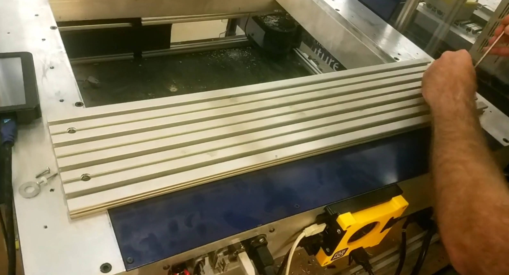
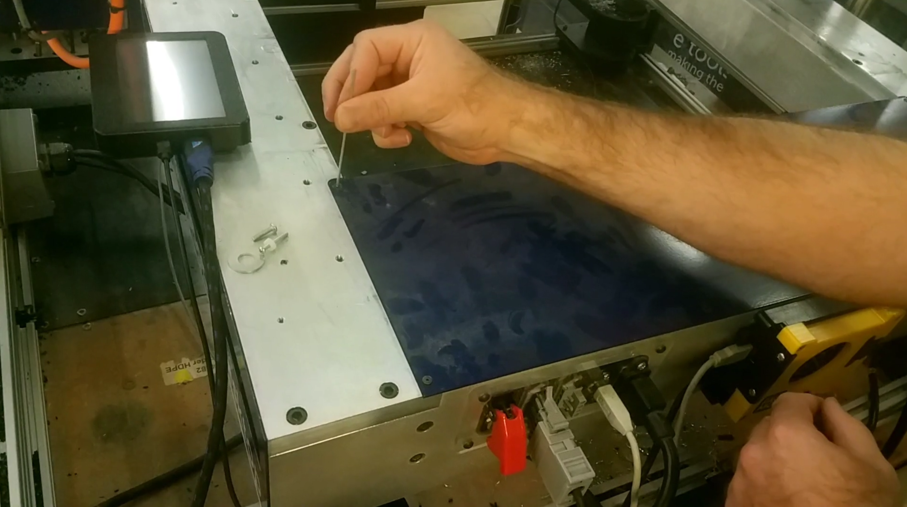
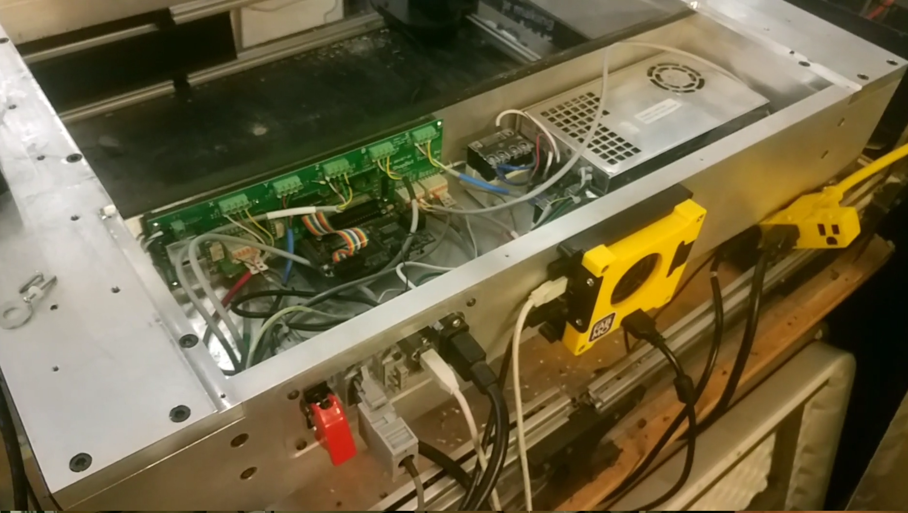
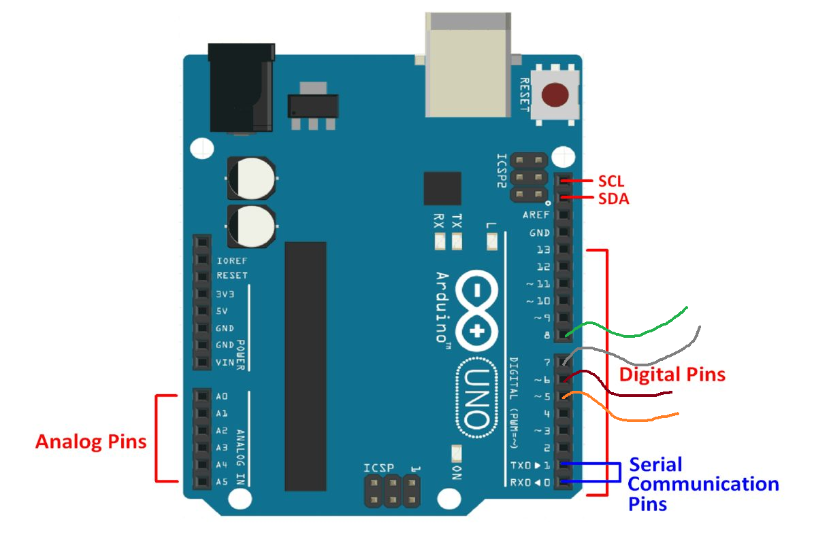
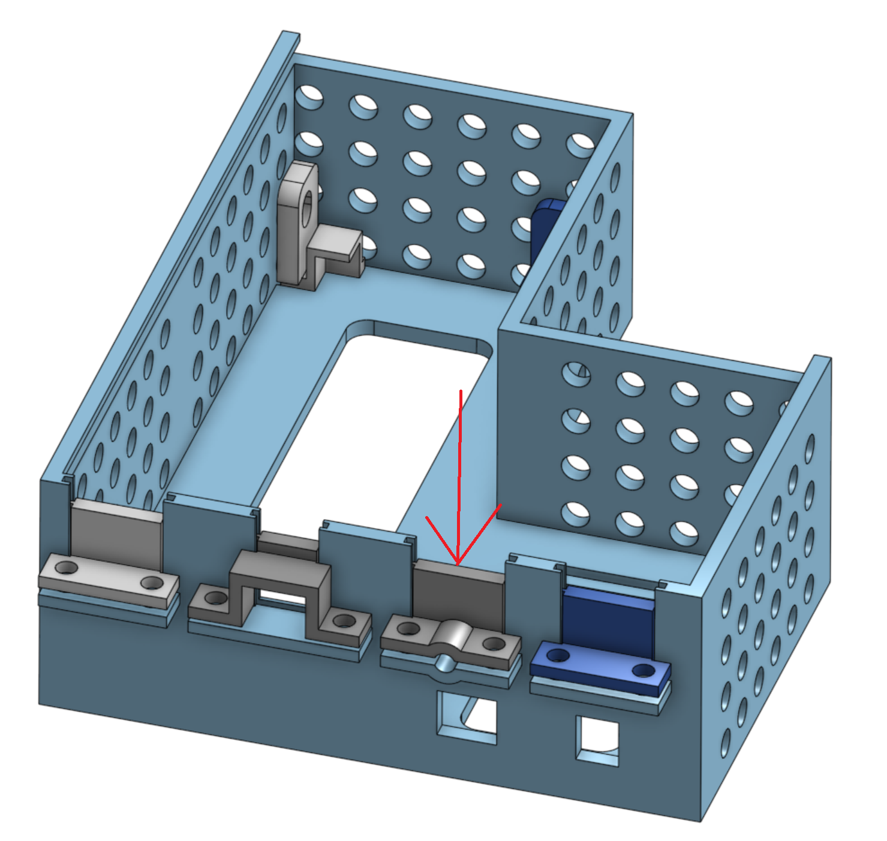
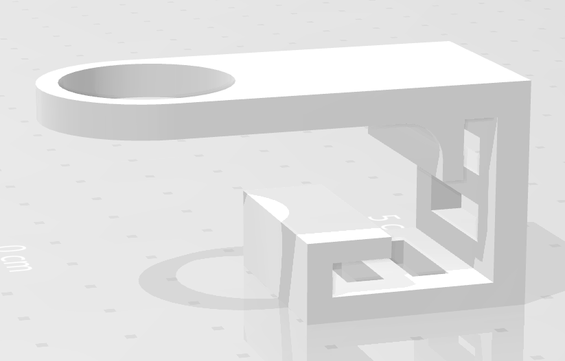
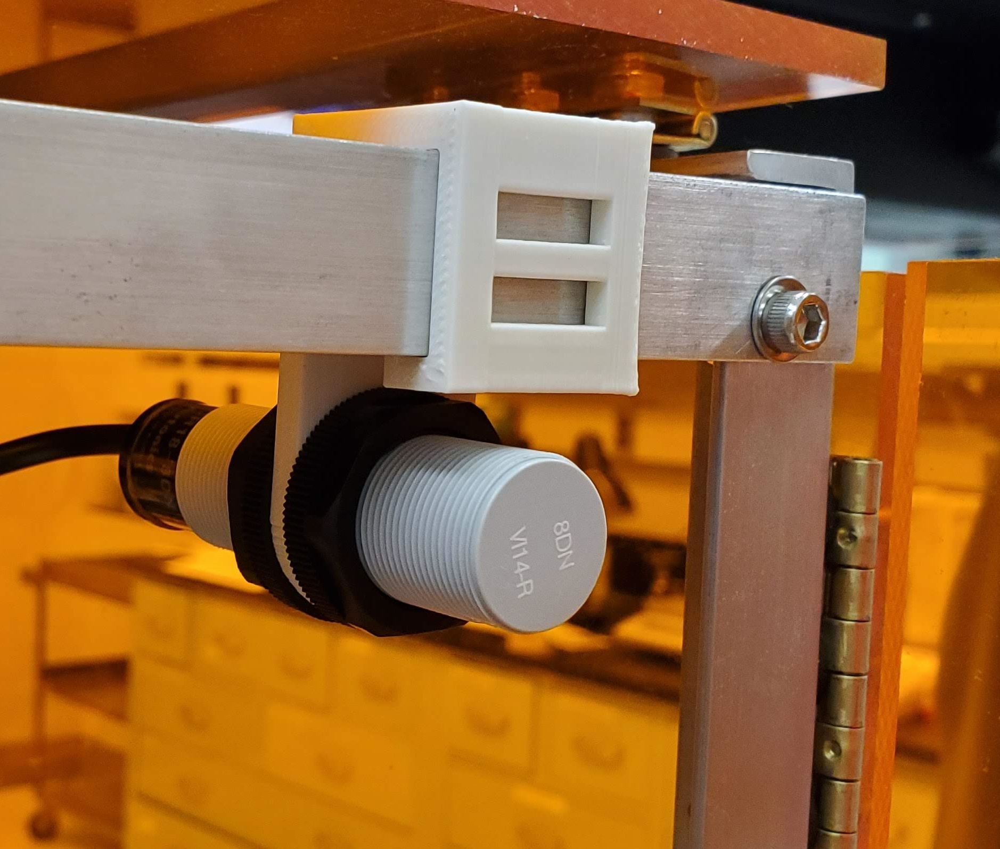
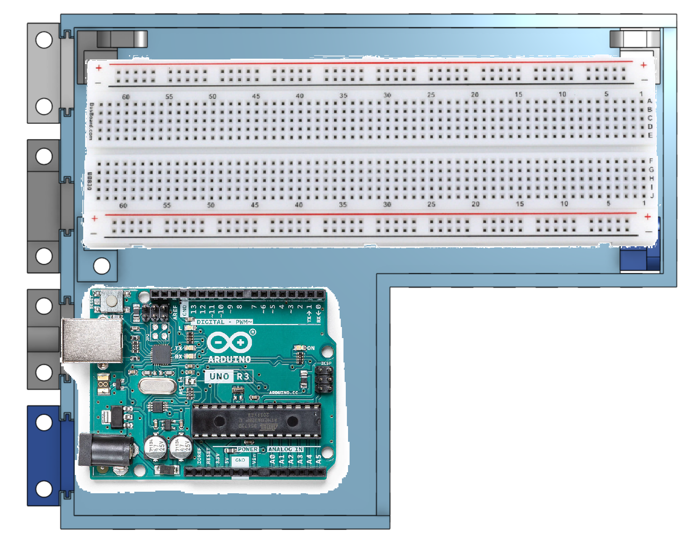
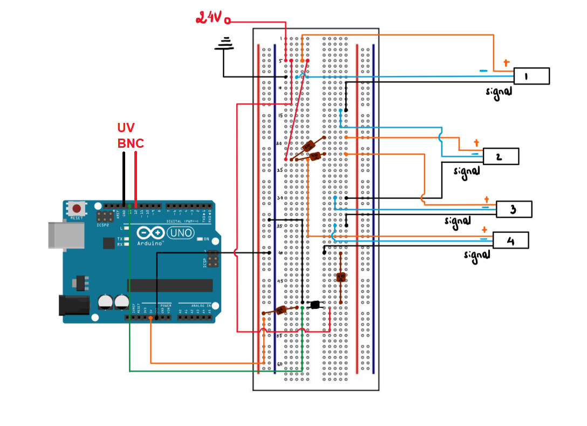

The Shopbot software, Sb3.exe, sends commands to the Shopbot, which are executed in order using the Shopbot's onboard controller. The Shopbot Desktop does not send any signals back to the computer. Sb3.exe attempts to predict where the Shopbot should be and displays a position and flag status. However, these predictions are often wrong. Installing an Arduino lets us receive signals for the on/off status of output flag 5-8 (1-indexed) back to the python GUI.
The Arduino has a second purpose, which is a safety interlock. We can install sensors on the enclosure that detect whether doors are open and closed, and using a circuit board and an Arduino, we can tell the python GUI whether it is safe for the UV lamp to be on.
| 1. From the back of the Shopbot, use a 4 mm allen wrench to unscrew the 4 screws on the back part of the decking. Slide the decking towards you to remove the decking. |
 |
| 2. Use a 2.5 mm allen wrench to remove the 6 screws on the blue cover. Do not over-tighten when re-installing. |
 |
| 3. Lift off the blue cover. |
 |
| 4. Find the output flags OP5, OP6, OP7, and OP8 at the top left part of the breadboard. Insert a 1.5 m wire into each slot and tighten each screw. |
 |
| 5. Feed the wires through the hole at the bottom of the breadboard cavity. Tuck them into a place where they won't get in the way of the Shopbot gantry, e.g. taped to the base of the enclosure, and feed them up to the Arduino. |
|
| 6. Install the wires in four of the digital input/output slots on the Arduino. For example, choose inputs 5-8 |
 |
| 7. Use the clamp above the Arduino USB plug to keep the output flag wires in place. Use 8-32 screws and nuts. |
 |
| 8. Reinstall the blue cover. |
|
| 9. Reinstall the decking. |
|
| 1. 3D print four sensor holders. |
 |
| 2. Snap the sensor holders onto the top bar of the enclosure, at the hinge side of each of the 4 most frequently used doors at the front and back of the machine. Depending on the stiffness of the material chosen, you may need to unscrew the enclosure corner and slide the holder on from the end. Slide the sensor through the hole of the holder and position its face so it will be very close to the door when the door is closed. |
 |
| 3. Feed all wires toward the Arduino case. Extend wires by connecting to single-stranded wires. Protect connections with heat-shrink tubing. |
|
| 4. Install the breadboard using 2-4 of the clamps that you 3D printed with the Arduino case. Fix clamps using 1/4-20 screws. |
 |
| 5. Wire the sensors as shown below (note: this diagram is under development.) Hold the sensor wires in place using the top clamp. |
|
| 6. Connect the ground and 24V wires from the breadboard into the 24V DC Power Adapter. Hold the power adapter in place using the 2nd clamp from the top. Plug the adapter into the wall. |
|
| 7. Connect the GND to the negative terminal of the BNC connector and one of the digital I/O pins (e.g. pin 12) to the positive terminal of the BNC connector. Plug the BNC connector into the UV lamp controller (DC20). |
|
| 8. Open the python GUI and go to settings. Go to the Arduino tab. Check that all of the pins that you used are the same as the pins in the software. Correct if necessary. |
|
| 9. Adjust positions of sensors so that opening each door triggers the "DOOR OPEN" state on the software. |
|
